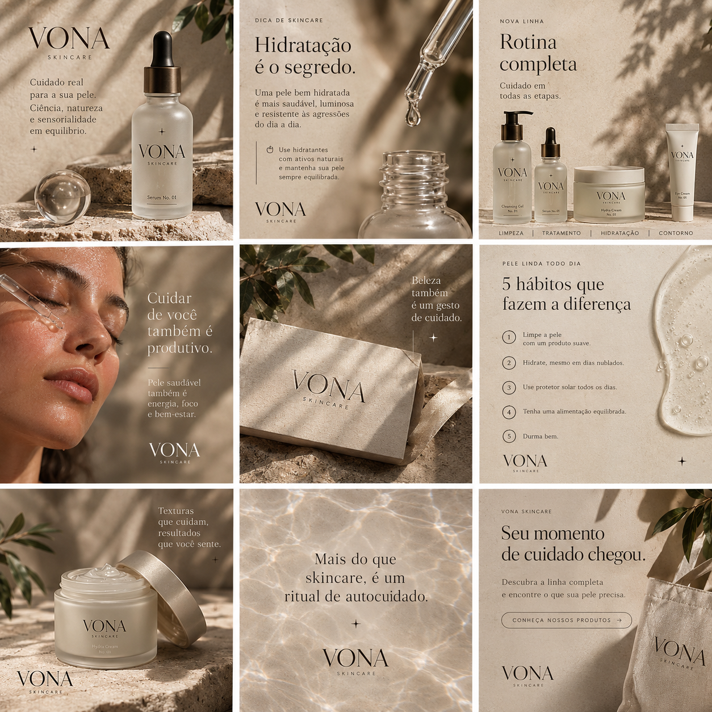
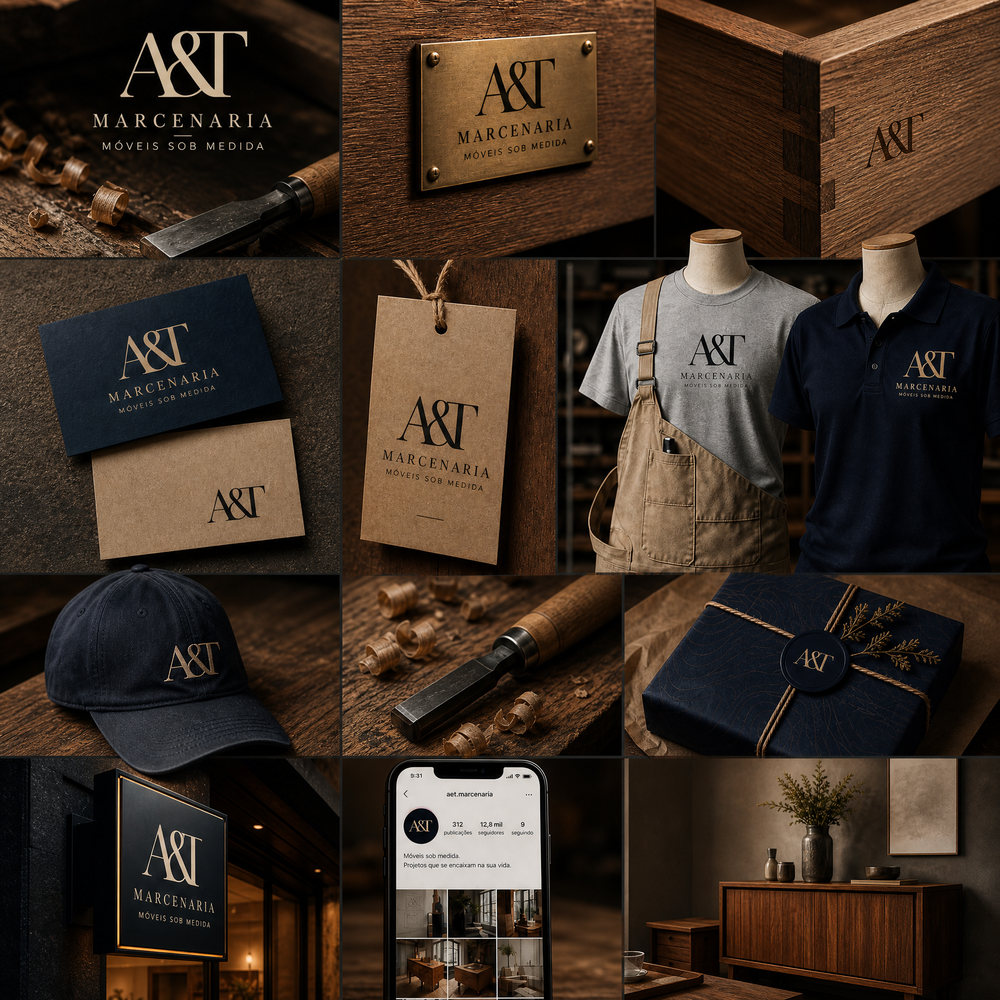

Quem organiza a comunicação visual da sua empresa.
Identidade visual, materiais e sites institucionais para pequenos negócios que exigem precisão, consistência e presença profissional.

Seu negócio mudou. A comunicação acompanhou?
Quando os pontos de contato não conversam entre si, o valor do seu trabalho se perde no ruído.
Fragmentação
Cada material parece vir de uma direção diferente, sem unidade visual.
Falta de clareza
O cliente precisa se esforçar para entender o seu padrão e posicionamento.
Descompasso
A qualidade real da sua entrega não é refletida na sua imagem pública.
Ordem como sistema.
A KQ estrutura a comunicação visual da sua empresa de ponta a ponta. Não se trata de estética superficial, mas de criar um padrão sólido e funcional que faça sentido para o seu negócio.
Serviços executados
Identidade Visual
Sistemas de marca completos, manuais de aplicação, tipografia e diretrizes de cor para autonomia total.
Site Institucional
Arquitetura de informação, código limpo, design editorial e foco em conversão direta para o WhatsApp.
Materiais de Apresentação
Propostas comerciais, PDFs corporativos e papelaria refinada para interações decisivas.
Artes Prontas & Templates
Padrões estruturados para redes e sinalização diária sem depender de ajustes constantes.
Projetos executados
Registros visuais de marcas que colocaram a casa em ordem. (Passe o mouse para revelar a cor original)



Como funciona
Entender
Mapeamento do cenário atual, gargalos de apresentação e necessidades reais do negócio.
Organizar
Definição estrutural da arquitetura de informação e diretrizes visuais do sistema.
Criar
Execução técnica do design, código e materiais com rigor editorial e tipográfico.
Entregar
Arquivos organizados e site no ar prontos para uso imediato no dia a dia.

Sobre a KQ
Dirigido por Karoline, a KQ Design atua no desenvolvimento de sistemas de comunicação visual e sites institucionais que priorizam a clareza, a ordem e o rigor técnico.
Acreditamos que um pequeno negócio não precisa de ornamentos excessivos ou promessas mirabolantes, mas de uma apresentação firme que transmita a real maturidade do trabalho executado.
Perguntas frequentes
O prazo médio varia entre 2 a 4 semanas, a depender da complexidade do projeto e da agilidade no envio dos dados iniciais.
Sim. O site é desenvolvido com código limpo e estrutura modular, entregue pronto para operação e com orientações simples.
Não. Focamos na criação do sistema visual e estrutura digital. Entregamos a casa organizada e os templates prontos para você ou sua equipe operarem.
Vamos organizar a comunicação da sua empresa?
Inicie uma conversa direta para analisarmos o momento do seu negócio.
Iniciar conversa no WhatsApp